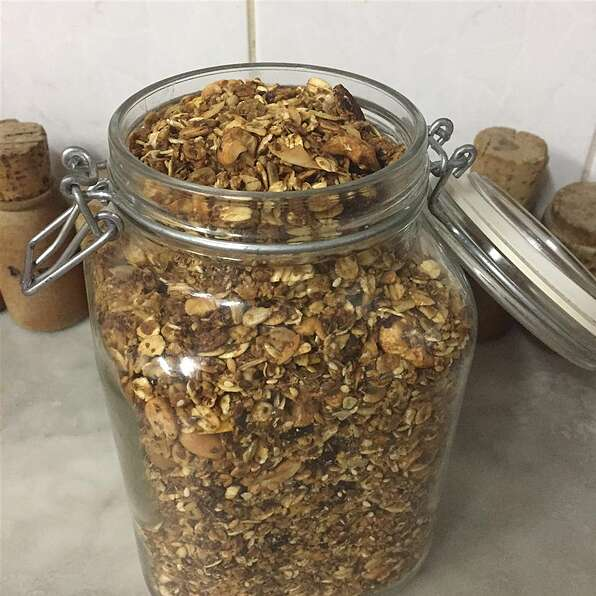

Jennifer's Granola

Description
A granola recipe fortified with wheat germ and flax seed that still tastes good.
Ingredients
- 4 cups rolled oats
- 1 cup wheat germ
- 1/2 cup brown sugar
- 1/2 cup raw sunflower seeds
- 1/2 cup chopped pecans
- 1/2 cup sliced almonds
- 1 teaspoon ground cinnamon
- 1 1/2 teaspoons salt
- 1/3 cup canola oil
- 1/4 cup honey
- 1 teaspoon vanilla extract
- 1/2 cup water
Directions
- Preheat the oven to 300 degrees F
- In a large bowl, mix together the oats, wheat germ, flax seed meal, brown sugar, sunflower seeds,
pecans, almonds, cinnamon, and salt. In a seperate bowl, whisk together the oil, honey, vanilla,
and water. Pour the wet ingredients over the dry, and mix until evenly blended. Spread in a greased
9x13 or 11x7 inch baking pan.
- Bake for 1 hour in the preheated oven, stirring every 20 minutes, or until toasted. Let cool completely
before storing in an airtight container.